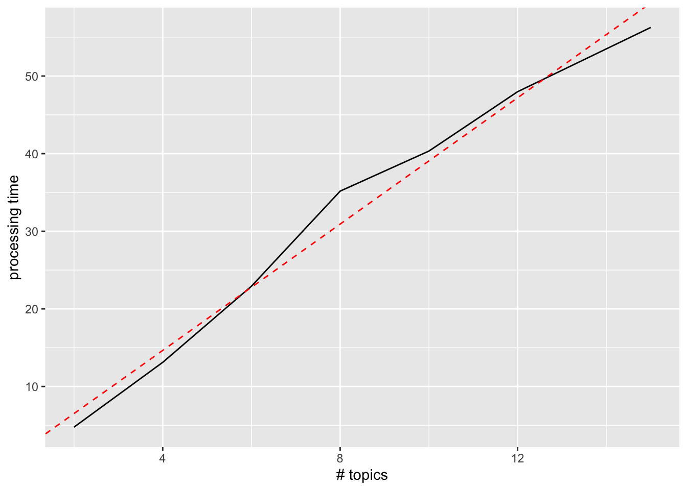
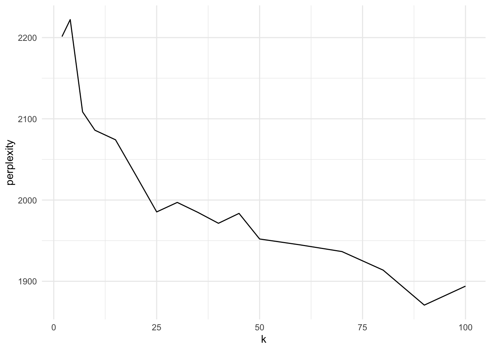

Show me the code
library(tidyverse)
library(here)
library(tidytext)
library(topicmodels)
source(here('common_fxns.R'))library(tidyverse)
library(here)
library(tidytext)
library(topicmodels)
source(here('common_fxns.R'))Here we will implement a Latent Dirichlet Allocation analysis to help tease out topics from the corpus of articles gleaned from the Web of Science search. For more on LDA:
Blei, D. M. (2012). Probabilistic topic models. Communications of the ACM, 55(4), 77–84. https://doi.org/10.1145/2133806.2133826
For an example of topic modeling on which this script is based, see: https://www.tidytextmining.com/topicmodeling
One goal of topic modeling in this case is to potentially identify topics within the search results that are not relevant to the work of CONVEI. Another goal is to potentially identify clusters of articles that might partition search results into various disciplines, applied sciences catagories, or especially information valuation methods.
abstr_df <- load_articles() %>%
filter(topic == 'abstract')
abstr_words_df <- abstr_df %>%
unnest_tokens(input = text, output = word, token = 'words') %>%
anti_join(stop_words, by = 'word') %>%
group_by(doc_id, word) %>%
summarize(n = n(), .groups = 'drop') How many latent topics to include? How to identify an appropriate number of topics? From https://www.mathworks.com/help/textanalytics/ug/choose-number-of-topics-for-LDA-model.html:
To decide on a suitable number of topics, you can compare the goodness-of-fit of LDA models fit with varying numbers of topics. You can evaluate the goodness-of-fit of an LDA model by calculating the perplexity of a held-out set of documents. The perplexity indicates how well the model describes a set of documents. A lower perplexity suggests a better fit.
Adding topics will increase the processing time as well.
Examine processing time (values plotted in graphs are based on computation time on work Macbook Pro 15”, 2017, 2.8 GHz Intel quad core Intel core i7, with 16 GB RAM) and how it varies with \(k\) and \(n\).
As \(n\) increases (more articles), the number of terms in the DTM will increase as well, so if LDA processing time is linear with matrix size, then it will be marginally increasing with \(n\). These analyses are performed just on the Web of Science subset… not the full article set including Scopus results.
sample_abstr <- function(n, df = abstr_words_df) {
id_vec <- df$doc_id %>% unique()
id_sample <- sample(id_vec, size = n, replace = FALSE)
out_df <- df %>%
filter(doc_id %in% id_sample)
return(out_df)
}
words_per_sample <- function(n, df = abstr_words_df) {
### take the df = abstr_words_df, filter it for n articles, return word count
term_count <- sample_abstr(n = n, df = df) %>%
.$word %>% n_distinct()
return(term_count)
}
n_vec <- 2^(0:11)
words_vs_n_df <- data.frame(n = n_vec,
term_count = sapply(n_vec, words_per_sample))
lm(term_count ~ sqrt(n), data = words_vs_n_df)
Call:
lm(formula = term_count ~ sqrt(n), data = words_vs_n_df)
Coefficients:
(Intercept) sqrt(n)
-777.9 525.8 ggplot(words_vs_n_df, aes(x = n, y = term_count)) +
geom_line() +
geom_function(fun = function(x) -729 + 499 * sqrt(x), color = 'red', linetype = 'dashed')
Word count goes approximately as the square root of \(n\), so doubling \(n\) increases word count by a factor of ~1.4 (on top of doubling the number of articles).
# abstr_sample_dtm <- sample_abstr(n = 3000) %>%
# cast_dtm(title, word, n)
# system.time({
# abstr_lda <- topicmodels::LDA(abstr_sample_dtm, k = 4, control = list(alpha = .1, seed = 4321))
# })
### on for k = 4: n = 200, 1.5 s; n = 400, 3.98 s; n = 600, 5.5 s; n = 1000, 15.9 s; n = 2000, 31.39 s; n = 3000, 39.0 s
p_df <- data.frame(n = c(200, 400, 600, 1000, 2000, 3000),
t = c(1.5, 3.98, 5.5, 15.9, 31.39, 39.0))
lm(t ~ n, p_df)
Call:
lm(formula = t ~ n, data = p_df)
Coefficients:
(Intercept) n
-0.84536 0.01421 ggplot(p_df, aes(x = n, y = t)) +
geom_line() +
geom_abline(intercept = -.845, slope = .014214, color = 'red', linetype = 'dashed') +
labs(x = '# articles', y = 'processing time')
Processing time seems approximately linear with number of articles…
abstr_sample_dtm <- sample_abstr(n = 1000) %>%
cast_dtm(doc_id, word, n)
system.time({
abstr_lda <- topicmodels::LDA(abstr_sample_dtm, k = 2)
}) user system elapsed
2.443 0.011 2.454 ### on sample of 1000 articles: k = 2, 4.76 s; k = 4, 13.11s; k = 6, 22.92 s; k = 8, 35.17; k = 10, 40.33; k = 12, 47.98; k = 15, 56.26
p_df <- data.frame(k = c( 2, 4, 6, 8, 10, 12, 15),
t = c(4.76, 13.11, 22.92, 35.17, 40.33, 47.98, 56.26))
lm(t ~ k, p_df)
Call:
lm(formula = t ~ k, data = p_df)
Coefficients:
(Intercept) k
-1.630 4.069 ggplot(p_df, aes(x = k, y = t)) +
geom_line() +
geom_abline(intercept = -1.63, slope = 4.0691, color = 'red', linetype = 'dashed') +
labs(x = '# topics', y = 'processing time')
Processing time seems approximately linear with number of topics… maybe tapering off toward the end there?
Finding the right \(k\) can be based on evaluating fitted models against held-out data, such as perplexity, equivalent to the geometric mean per-word likelihood. See topicmodels::perplexity(object, newdata, ...).
Wallach HM, Murray I, Salakhutdinov R, Mimno D (2009). “Evaluation Methods for Topic Models.” In ICML’09: Proceedings of the 26th International Conference on Machine Learning, pp. 1105–1112. ACM Press.
Parameterizing the LDA model, from https://cran.r-project.org/web/packages/topicmodels/vignettes/topicmodels.pdf cite Griffiths and Steyvers (2004) suggesting \(\alpha = 50/k\), which seems high since it also seems like best practice is for \(\alpha < 1\). Perhaps instead stick with the default values, as described here. However, logically, these documents should have a small number of topics each (being relatively short articles each targeted on a few key findings/methods/research areas), so \(\alpha\) should be fairly small. The algorithm defaults to estimating alpha, which may be best for us:
control_LDA_VEM <-
list(estimate.alpha = TRUE, alpha = 50/k, estimate.beta = TRUE,
verbose = 0, prefix = tempfile(), save = 0, keep = 0,
seed = as.integer(Sys.time()), nstart = 1, best = TRUE,
var = list(iter.max = 500, tol = 10^-6),
em = list(iter.max = 1000, tol = 10^-4),
initialize = "random")Let’s pull a subset out of the abstracts for testing various values of \(k\), using perplexity() scores. Let’s take \(k\) values up to about 50 to see if there are any obvious patterns.
Create a sample dataset from the full abstract dataset:
Of the 1000 sampled articles, set aside 25% for testing, holding the other 75% for training.
Processing this is slow, so save out the perplexity-vs-\(k\) data for later access.
k_optim_file <- here('tmp', 'perplexity_vs_k.csv')
if(!file.exists(k_optim_file)) {
set.seed(42)
sample_size <- 1000
earliest_yr <- 2010
k_optim_sample_df <- abstr_df %>%
### drop oldest articles
filter(year >= earliest_yr) %>%
### sample articles
sample_n(sample_size) %>%
### randomize an index for each article - to separate into training/testing
mutate(index = sample(1:sample_size, replace = FALSE)) %>%
### unnest tokens
unnest_tokens(input = text, output = word, token = 'words') %>%
### drop unnecessary words
anti_join(stop_words, by = 'word') %>%
filter(nchar(word) > 2) %>%
filter(!str_detect(word, '[0-9]')) %>%
### summarize
group_by(title, word, index) %>%
summarize(n = n(), .groups = 'drop')
k_optim_train_dtm <- k_optim_sample_df %>%
filter(index <= 750) %>%
cast_dtm(document = title, term = word, value = n)
k_optim_test_dtm <- k_optim_sample_df %>%
filter(index > 750) %>%
cast_dtm(document = title, term = word, value = n)
}Now iterate over \(k\) values, create values of perplexity vs. \(k\) for identifying potential optimum.
if(!file.exists(k_optim_file)) {
k_vec <- c(2, 4, 7, 10, 15, 20, 25, 30, 35, 40, 45, 50, 60, 70, 80, 90, 100)
perp_vs_k_df <- lapply(k_vec,
FUN = function(k) {
### k <- k_vec[2]
message('Processing LDA for k = ', k, '...')
ptm <- proc.time()
k_optim_lda <- topicmodels::LDA(abstr_sample_dtm, k = k)
ptm <- proc.time() - ptm
alpha <- k_optim_lda %>% slot('alpha')
message('... for k = ', k, ': alpha = ', round(alpha, 3), ' and proc time = ', round(ptm[3], 3), 's...')
perp <- perplexity(object = k_optim_lda, newdata = k_optim_test_dtm)
return(data.frame(k = k, perplexity = perp))
}) %>%
bind_rows()
write_csv(perp_vs_k_df, k_optim_file)
}
perp_vs_k_df <- read_csv(k_optim_file)
ggplot(perp_vs_k_df, aes(x = k, y = perplexity)) +
geom_line() +
theme_minimal()
The steepest part of the curve ends around \(k = 25\), then flattens; if we consider this like a “knee” method, then 25 topics seems like a good place to be: tractable, and max marginal perplexity vs. k. However, in the vignette for topicmodels, on a small corpus (500 docs) all in the same discipline (statistical software), the authors decided on \(k=30\), so perhaps a higher \(k\) is warranted in our case.
Now let’s take the entire abstract set and apply the LDA process, setting \(k=50\) and allowing the algorithm to estimate \(\alpha\). Extract the most likely topic for each paper, and extract the top 20 terms for each topic. Write out as .csv files.
k <- 25
topic_outf <- sprintf(here('_output/lda_topic_k%s.csv'), k)
terms_outf <- sprintf(here('_output/lda_terms_k%s.csv'), k)
if(any(!file.exists(topic_outf, terms_outf))) {
abstr_words_df <- abstr_df %>%
unnest_tokens(input = text, output = word, token = 'words') %>%
anti_join(stop_words, by = 'word') %>%
filter(nchar(word) > 2) %>%
filter(!str_detect(word, '[0-9]')) %>%
group_by(doc_id, word) %>%
summarize(n = n(), .groups = 'drop')
abstr_words_dtm <- cast_dtm(abstr_words_df, document = doc_id, term = word, value = n)
set.seed(4321)
message('Processing the full abstract set of ', nrow(abstr_df),
' titles, with k = ', k, '...')
abstr_lda <- LDA(abstr_words_dtm, k = k)
### Extract topics for each doc by probability (drop less than 5% prob)
abstr_topics <- posterior(abstr_lda)$topic %>%
as.data.frame() %>%
mutate(title = rownames(.)) %>%
pivot_longer(cols = -title, names_to = 'topic', values_to = 'prob') %>%
mutate(topic = paste('topic ', topic),
prob = round(prob, 3)) # %>%
# filter(prob > 0.05)
write_csv(abstr_topics, topic_outf)
### Extract terms for each topic by probability
abstr_terms <- posterior(abstr_lda)$term %>%
as.data.frame() %>%
mutate(topic = paste('topic', rownames(.))) %>%
pivot_longer(cols = -topic, names_to = 'term', values_to = 'prob') %>%
group_by(topic) %>%
slice_max(order_by = prob, n = 100)
write_csv(abstr_terms, terms_outf)
}